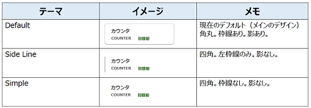
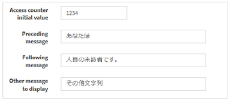
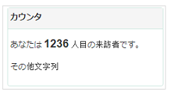

ウィジェット
目的・用途
本機能は、ページレイアウトで利用するウィジェットを作成・編集・削除する機能である。
利用方法
【Administration > ウェブデザイン管理（Web Design） > ウィジェット（Widget）画面】で各リポジトリにウィジェットを作成・編集・削除する
利用可能なロール
| ロール | システム 管理者 |
リポジトリ 管理者 |
サブリポジトリ 管理者 |
登録ユーザー | 一般ユーザー | ゲスト (未ログイン) |
|---|---|---|---|---|---|---|
| 利用可否 | ○ | ○ | ○ |
機能内容
1. 概要
- ウィジェットは、WEKO3に表示する内容を多言語で設定できる
- 画面上の操作によって、コーディングを行わなくてもウィジェットのHTMLおよびScriptの編集ができる機能である
2. ウィジェット一覧を表示する
【ウィジェット（Widget）画面】には以下のタブが表示される
- 一覧（List）
- 作成（Create）
- フィルターを追加▼（Add Filter▼）
- 一覧（List）タブ選択中のみ表示
- 外観はタブだが機能としてはプルダウンメニュー
- 選択▼（With selected▼）
- 一覧（List）タブ選択中のみ表示
- 外観はタブだが機能としてはプルダウンメニュー
- 編集（Edit）
- 一覧（List）タブ選択中は非表示
- 一覧（List）タブの操作によって表示される
- 編集（Edit）タブまたは詳細（Details）タブ選択中に表示
- 詳細（Details）
- 一覧（List）タブ選択中は非表示
- 一覧（List）タブの操作によって表示される
- 編集（Edit）タブまたは詳細（Details）タブ選択中に表示
【ウィジェット（Widget）画面】の一覧タブにウィジェット一覧を表示する
- サブリポジトリ管理者の場合、管理対象のサブリポジトリに属するウィジェットのみを一覧に表示する
- 表示項目は以下の通りである
- チェックボックス
- アクション（作成・編集・削除を表すアイコン）
- 「ID」：ウィジェットID
- 「Repository」：属するリポジトリ名
- 「Widget Type」：ウィジェットタイプ
- 「Label」：ウィジェット名
- 「Enable」：ウィジェットの状態
- ［フィルターを追加▼（Add Filter▼）］ボタンをクリックすると、以下の追加可能なフィルターリストを表示し、フィルター名をクリックすると当該フィルターの入力エリアを追加する
- フィルター名
- 「ID」
- フィルター方式の選択肢：等しい、等しくない、より大きい、より小さい、空、一覧にある、一覧にない
- 入力された数字を使い、選択したフィルター方式で絞り込む
- 「Repository」
- フィルター方式の選択肢：含む（contains）、含まれていません（not contains）、等しい（equals）、等しくない（not equal）、空（empty）、一覧にある（in list）、一覧にない（not in list）
- 入力された文字列を使い、選択したフィルター方式で絞り込む
- 「Widget Type」
- フィルター方式の選択肢：「Repository」と同じである
- 入力された文字列を使い、選択したフィルター方式で絞り込む
- 「Enable」
- フィルター方式の選択肢：等しい（equals）、等しくない（not equal）
- 入力エリアではなく選択肢「はい」「いいえ」を使い、「はい」なら有効なウィジェット、「いいえ」ならそうでないウィジェットを絞り込む
- 設定したフィルターは［適用（Apply）］ボタンを押下することで一覧に適用される
- ［フィルターをリセット（Reset filter）］ボタンを押下すると、設定したフィルターがリセットされる
- フィルター名
- ［選択▼（With selected▼）］ボタンをクリックすると、以下の追加可能な機能（現在削除ボタンのみ）を表示する
- レコードにチェックを入れない場合、「削除」（Delete）ボタンを押すと、エラーメッセージを表示する
メッセージ：
日本語：「少なくとも１つのレコードを選択してください。」
英語：「Please select at least one record.」 - レコードにチェックを入れる場合、［削除（Delete）］ボタンを押すと、確認ダイアログを表示する
メッセージ：
日本語：「選択したレコードを削除してもよろしいですか。」
英語：「Are you sure you want to delete selected records?」- ［OK］ボタンを押すと、該当レコードを削除し、メッセージを画面上部に表示する
メッセージ：
日本語：「レコード数＋レコードが正常に削除されました。」
英語：「Record was successfully deleted.」 - ［キャンセル（Cancel）］ボタンを押すと、確認ダイアログを閉じる
- ［OK］ボタンを押すと、該当レコードを削除し、メッセージを画面上部に表示する
- レコードにチェックを入れない場合、「削除」（Delete）ボタンを押すと、エラーメッセージを表示する
- 検索テキストボックスでロールを検索する
プレースホルダー：「Search」- 任意テキストを入力し、キーボードでの「Enter」を押すと、Id、リポジトリ名、ウィジェットタイプでの検索を行う
- テキストボックスの右端での［X］ボタンを押すと、検索条件がクリアーされる
- ウィジェット行の目アイコンを押すと、該当ウィジェットの詳細情報を「詳細」（Details）タブに表示する
- 「移動」（Filter）テキストボックスにテキストを入力すると、入力値が項目名またはその値に含まれている項目に絞り込んで表示する
- ウィジェット行の鉛筆アイコンを押すと、該当ウィジェットを「編集」（Edit）タブに表示し、ウィジェットの情報が編集できる
- 編集中はそのウィジェットがロックされる
- 一覧タブで、他のユーザーにロックされたウィジェットの鉛筆アイコンを押した場合、ロック解除の確認ダイアログを表示する
メッセージ：
日本語：「このウイジェットのロックを解除してよろしいでしょうか。」
英語：「Do you wan to unlock this widget?」- ［OK］ボタンを押すと、操作中のユーザーによって該当ウィジェットをロックして、「編集」（Edit）タブを表示する
- もともとロックしていた方の画面は変化しない
- ［閉じる］ボタンを押すと、確認ダイアログを閉じる
- そうした場合、空白の「編集」（Edit）タブが表示される
- ［OK］ボタンを押すと、操作中のユーザーによって該当ウィジェットをロックして、「編集」（Edit）タブを表示する
- ロックしている側の画面で［Save］［キャンセル（Cancel）］ボタンを押した場合、ロックが解除されて他のユーザーからも保存できるようになる
- 「編集」（Edit）タブの表示中に、ログアウトや他の画面への遷移を行った場合には、ロックは解除されない
- 「編集」（Edit）タブの表示中にウェブブラウザのタブを閉じた場合には、ロックが解除されず、同一のユーザーで同じウィジェットの「編集」（Edit）タブを表示した場合でも、他のユーザーにロックされた場合と同様にロック解除の確認ダイアログを表示する
- 一覧タブで、他のユーザーにロックされたウィジェットの鉛筆アイコンを押した場合、ロック解除の確認ダイアログを表示する
- ［Save］ボタンを押すと、編集内容が保存される
- widget_items、widget_multi_lang_dataテーブルが更新される
- ウィジェットが他のユーザーにロックされていた場合は、保存されずに以下のエラーメッセージがポップアップで表示される
メッセージ：「Widget is locked by another user.」 - ロックして「編集」（Edit）タブで操作しているウィジェットが他のユーザーによって削除された場合に、ロックしているユーザーが削除後に保存すると、削除されなかったかのように保存される
- ［Delete］ボタンを押すと、確認ダイアログを表示する
メッセージ：「Are you sure to delete this widget Item?」- ［OK］ボタンを押すと、ロックを無視して該当ウィジェットを削除し、メッセージをポップアップで表示する
メッセージ：「Widget item has deleted successfully.」- 他のタブに移動しない。削除した後に［Save］ボタンを押すと削除されなかったかのように保存される
- ［キャンセル（Cancel）］ボタンを押すと、確認ダイアログを閉じる
- 該当ウィジェットがページレイアウトで使用されていた場合は、削除せずにエラーメッセージをポップアップで表示する
メッセージ：「Cannot delete this widget because it's setting in Widget Design.」
- ［OK］ボタンを押すと、ロックを無視して該当ウィジェットを削除し、メッセージをポップアップで表示する
- ［Cancel］ボタンを押すと、一覧タブに戻る
- 編集中はそのウィジェットがロックされる
- 「詳細」（Details）タブと「編集」（Edit）タブとは互いに行き来できる
- ウィジェット行のごみ箱アイコンを押すと、ロックを無視して該当ウィジェットを削除し、メッセージを画面上部に表示する
メッセージ：
日本語：「レコード数＋レコードが正常に削除されました。」
英語：「Record was successfully deleted.」- 該当ウィジェットがページレイアウトで使用されていた場合は、削除せずにエラーメッセージをポップアップで表示する
メッセージ：「Cannot delete this widget because it's setting in Widget Design.」
- 該当ウィジェットがページレイアウトで使用されていた場合は、削除せずにエラーメッセージをポップアップで表示する
「一覧」（List）から「作成」（Create）タブを押すと、「作成」（Create）タブに移動し、ウィジェットを新規作成できる
共通の入力項目
- 「Repository」：システムでのリポジトリを選択する
- 必須項目とする
- 選択肢：サブリポジトリ管理者の場合、管理対象のサブリポジトリのみを表示する
- 「Type」：ウィジェット種別を設定する
- 必須項目とする
- ウィジェット種別は以下の通りである
- Free description
- Access counter
- Notice
- New arrivals
- Main contents
- Menu
- Header
- Footer
- 「Language」：ウィジェットの設定言語を選択する
- 必須項目とする
- 選択肢：【Administration > 設定（Setting） > 言語表示（Language）画面】に表示されるものと同じ言語を使用する
- 表示順序について、【言語表示（Language）画面】での「登録言語」の言語を一覧の上部に表示し、「対応言語」の言語一覧を次に表示する
- 「Name」：ウィジェット名を設定する
- 必須項目とする
- 「Theme」：枠や枠線といったWidgetのスタイルテンプレートを指定する
- 「Label Enable」：ラベルの表示制御を設定する
- デフォルトはチェック有りとする
- 「Label Color」ラベルの背景色を設定する
- 「Label Enable」がチェックなしの場合は無効になる
- 「Label Text Color」：ラベルの文字色を設定する
- 「Label Enable」がチェックなしの場合は無効になる
- 「Border Style」：Widgetの枠線のスタイルを選択する
- 3つの種類：実線、点線、二重線
- 「Border Color」：Widgetの枠線の色を指定する
- 「Background Color」：Widgetの背景色を指定する
- 「Enable」：ウィジェット内容の表示/非表示を設定する
- デフォルトはチェック有りとする
- 「Repository」：システムでのリポジトリを選択する
テーマ（Theme）について
現在3つのテーマを以下のように対応している- Default
枠は角丸である。枠線あり。影あり - Simple
枠は四角である。左枠線のみ。影なし - Side Line
枠は四角である。枠線なし。影なし - テーマの表示は以下になる
- Default
| テーマ | イメージ | メモ |
|---|---|---|
| Default |  |
現在のデフォルト(メインのデザイン) 角丸。枠線あり。影あり。 |
| Side Line | 四角。左枠線のみ。影なし。 | |
| Simple | 四角。枠線なし。影なし。 |
- 各種ウィジェットでの入力項目
- Free description
- 概要
自由記述コンテンツを表示するウィジェットである - 機能
WYSIWYGエディタである- HTMLを直に編集可能
- Scriptが編集可能
- 画像にリンクを貼り付け可能／解除可能
- 文字にリンクを貼り付け可能／解除可能
- ヘッダをフォーマット可能
- フォントを選択可能
- サイズを変更可能
- 文字を装飾可能
- 配置を変更可能
- 箇条書き可能
- リンクのアンダーラインを解除可能
- プレビュー可能
- ファイルのアップロード可能（挿入リンクは相対パス）
- 概要
- Access counter
- 概要
アクセスカウンタを表示するウィジェットである - 機能
- 「Access counter initial value」：アクセスカウンタ値の初期値を指定する
デフォルト：0 - 「Preceding message」：アクセスカウンタ値前のメッセージを設定する
- 「Following message」：アクセスカウンタ値後のメッセージを設定する
- 「Other message to display」：他のメッセージを設定する
- 以下のイメージはアクセスカウンタのサンプルである
- 「Access counter initial value」：アクセスカウンタ値の初期値を指定する
- 概要
- Free description
| 設定 | 表示 |
|---|---|
 |
 |
- Notice
- 概要
お知らせを一覧表示するウィジェットである - 機能
WYSIWYGエディタをである- 「自由記述」にお知らせ内容を設定可能とする
（「Free Description」部分のような機能がある） - お知らせ内容の全表示/部分表示を設定可能とする
- 「Write More」チェックボックスにチェックを入れると、追加でお知らせの自由記述エリアを表示する
- 「Read more」テキストボックス：続きを読むリンク名を指定する
- 「Hide the rest」テキストボックス：続きを隠すリンク名を指定する
- 「自由記述」にお知らせ内容を設定可能とする
- 概要
- New arrivals
- 概要
- ウィジェット表示は、 公開日から指定された日数(新着日数)までのアイテム を公開日順(降順)に一覧表示する
- 同一公開日の場合はタイトルの文字コードを第2の条件としてソートする
- 一覧表示されたアイテムは、アクセスユーザが閲覧可能なものとする
- 一覧表示されたアイテムは、アイテム詳細ページへのリンク表示とし、画面遷移可能とする
- ウィジェット表示は、 公開日から指定された日数(新着日数)までのアイテム を公開日順(降順)に一覧表示する
- 機能
- 「New date」テキストボックス：新着日数を設定する
- 設定値は"Today,1,2,3,・・・30"の計31個のプルダウンとする
- デフォルト値：5日
- 「Display Results」テキストボックス：アイテム表示件数を設定する
- 設定値は"5,10,20,50,100"の計5個のプルダウンとする
- デフォルト値：5件
- 「RSS feed」チェックボックス：RSS配信を設定する
- デフォルト：チェックなし
- 「New date」テキストボックス：新着日数を設定する
- 概要
- Main contents
- 概要
- WEKO3のメイン画面は以下で構成されるものとする
- ヘッダ部
- メイン部(メニュータブ、アイテム検索、インデックスツリー、検索結果表示)
- コンテンツ自体を編集できずに、コンテンツのラベル・テーマ・背景などしか編集できない
- WEKO3のメイン画面は以下で構成されるものとする
- 概要
- Menu
- 概要
システムのページを表示するウィジェットである - 機能
- 「Orientation」ラジオボタン：メニューの表示向きを設定する
- 選択肢：「Horizontal」、「Vertical」
- デフォルト：「Horizontal」
- 「Background Color」：背景色を色の表から設定する
- デフォルト色：白
- 「Active Background Color」：アクティブ背景色を設定する
- デフォルト色：白
- 「Default Color」：テキスト色を設定する
- デフォルト色：黒
- 「Active Color」：アクティブテキスト色を設定する
- デフォルト色：黒
- 「Show/Hide Pages」エリア：メニューに表示するページを指定する
- 設定対象は【ページレイアウト（Page Layout）画面】で作成したページ一覧とする
- デフォルト：すべてページが「Show」エリアに表示する
- 「Orientation」ラジオボタン：メニューの表示向きを設定する
- 概要
- Header/Footer
- 概要
ヘッダ/フッタを表示するウィジェットである。
ヘッダエリアは固定のヘッダ行（言語切替，ログインボタン，サインアップボタンを表示するエリア）と、自由にカスタマイズできるエリアがある。 - 機能
- WYSIWYGエディタである（「Free Description」部分のような機能がある）
- 固定のヘッダは既存のWidgetのHeader Widgetの中に含まれるものとする。位置はHeader Widgetの位置に従う
- ヘッダWidgetで固定ヘッダの背景色・文字色は、「Fixed Header Background Color」と「Fixed Header Text Color」で設定できるものとする
- 自由にカスタマイズできるエリアの背景色は、「Background Color」で設定できるものとする
- 固定ヘッダの背景色・文字色のデフォルトカラーは背景は白、文字は灰色とする
- 概要
関連モジュール
- weko-gridlayout
処理概要
1. 設定
表示言語設定に対応するウィジェットラベルを設定しない場合、ウィジェットラベルのデフォルトを設定する
- パス： https://github.com/RCOSDP/weko/blob/release_v2.1.0/modules/weko-gridlayout/weko_gridlayout/config.py#L28
- 設定キー： 「WEKO_GRIDLAYOUT_DEFAULT_WIDGET_LABEL」
- 現在の設定値：
WEKO_GRIDLAYOUT_DEFAULT_WIDGET_LABEL = "No Title"
表示言語設定に対応するウィジェットがない場合、ウィジェット言語のデフォルトを設定する
- パス： https://github.com/RCOSDP/weko/blob/release_v2.1.0/modules/weko-gridlayout/weko_gridlayout/config.py#L31
- 設定キー： 「WEKO_GRIDLAYOUT_DEFAULT_LANGUAGE_CODE」
- 現在の設定値：
WEKO_GRIDLAYOUT_DEFAULT_LANGUAGE_CODE = "en"
「New Arrivals」ウィジェット種類での「Display Results」のデフォルト値を設定する
- パス： https://github.com/RCOSDP/weko/blob/release_v2.1.0/modules/weko-gridlayout/weko_gridlayout/config.py#L34
- 設定キー： 「WEKO_GRIDLAYOUT_DEFAULT_DISPLAY_RESULT」
- 現在の設定値：
WEKO_GRIDLAYOUT_DEFAULT_DISPLAY_RESULT = "5"
「New Arrivals」ウィジェット種類での「New date」のデフォルト値を設定する
- パス： https://github.com/RCOSDP/weko/blob/release_v2.1.0/modules/weko-gridlayout/weko_gridlayout/config.py#L37
- 設定キー： 「WEKO_GRIDLAYOUT_DEFAULT_NEW_DATE」
- 現在の設定値：
WEKO_GRIDLAYOUT_DEFAULT_NEW_DATE = "5"
開発に使用しているウィジェット名を設定する
- パス：
- 設定キー：
- 「WEKO_GRIDLAYOUT_ACCESS_COUNTER_TYPE」
- 「WEKO_GRIDLAYOUT_NEW_ARRIVALS_TYPE」
- 「WEKO_GRIDLAYOUT_NOTICE_TYPE」
- 「WEKO_GRIDLAYOUT_MAIN_TYPE」
- 「WEKO_GRIDLAYOUT_MENU_WIDGET_TYPE」
- 現在の設定値：
WEKO_GRIDLAYOUT_ACCESS_COUNTER_TYPE = "Access counter"
WEKO_GRIDLAYOUT_NEW_ARRIVALS_TYPE = "New arrivals"
WEKO_GRIDLAYOUT_NOTICE_TYPE = "Notice"
WEKO_GRIDLAYOUT_MAIN_TYPE = "Main contents"
WEKO_GRIDLAYOUT_MENU_WIDGET_TYPE = 'Menu'
- ウィジェットの高さの自動計算・不自動計算を設定する
- パス： https://github.com/RCOSDP/weko/blob/release_v2.1.0/modules/weko-gridlayout/weko_gridlayout/config.py#L89
- 設定キー： 「WEKO_GRIDLAYOUT_AUTO_ADJUST_THE_HEIGHT」
- 現在の設定値：
WEKO_GRIDLAYOUT_AUTO_ADJUST_THE_HEIGHT = True
- サーバから返却するウィジェットのデータを圧縮するかどうかを設定する
- パス： https://github.com/RCOSDP/weko/blob/release_v2.1.0/modules/weko-gridlayout/weko_gridlayout/config.py#L95
- 設定キー：「WEKO_GRIDLAYOUT_IS_COMPRESS_WIDGET」
- 現在の設定値：
WEKO_GRIDLAYOUT_IS_COMPRESS_WIDGET = True
- サーバから返却するウィジェットのデータの圧縮レベルを設定する
- パス： https://github.com/RCOSDP/weko/blob/release_v2.1.0/modules/weko-gridlayout/weko_gridlayout/config.py#L92
- 設定キー：「WEKO_GRIDLAYOUT_COMPRESS_LEVEL」
- 現在の設定値：
WEKO_GRIDLAYOUT_COMPRESS_LEVEL = 6
- サーバから返却するウィジェットデータのキャッシュ名を設定する
- パス： https://github.com/RCOSDP/weko/blob/release_v2.1.0/modules/weko-gridlayout/weko_gridlayout/config.py#L98-L102
- 設定キー：
- 「WEKO_GRIDLAYOUT_WIDGET_CACHE_KEY」
- 「WEKO_GRIDLAYOUT_WIDGET_PAGE_CACHE_KEY」
- 現在の設定値：
WEKO_GRIDLAYOUT_WIDGET_CACHE_KEY = "widget_cache"
WEKO_GRIDLAYOUT_WIDGET_PAGE_CACHE_KEY = "widget_page_cache"
- ウィジェットに関するファイルアップロードのBucketIDを設定する
- パス： https://github.com/RCOSDP/weko/blob/release_v2.1.0/modules/weko-gridlayout/weko_gridlayout/config.py#L104
- 設定キー：「WEKO_GRIDLAYOUT_BUCKET_UUID」
- 現在の設定値：
WEKO_GRIDLAYOUT_BUCKET_UUID = "517f7d98-ab2c-4736-91ea-54ba34e7905d"
- 静的なウィジェットファイルサイズの上限を設定する
- パス： https://github.com/RCOSDP/weko/blob/release_v2.1.0/modules/weko-gridlayout/weko_gridlayout/config.py#L107
- 設定キー：「WEKO_GRIDLAYOUT_FILE_MAX_SIZE」
- 現在の設定値：
WEKO_GRIDLAYOUT_FILE_MAX_SIZE = 1024 * 1024 * 16 # 16 MB
2. ウィジェットの実装方法
- 対応しているライブラリ：
- Trumbowyg（https://alex-d.github.io/Trumbowyg/）
- 本ライブラリはウィジェットでのWYSIWYGエディタ機能を対応している
- Gridstack.js（https://gridstackjs.com/）
- トップページにてウィジェットデザインのレンダーを対応している
- Trumbowyg（https://alex-d.github.io/Trumbowyg/）
- トップページにて、表示ページに関する特別なウィジェット設定があるかどうかチェックする
- ウィジェット設定がない場合 => デフォルトとし「Main Layout」の設定を読み出し、gridstackJSでレイアウトをレンダーする
- ウィジェット設定がある場合 => 該当するページの設定を読み出し、gridstackJSでレイアウトをレンダーする
- ウィジェットの高さの自動計算
- 概要的にスクロールバー高さの単位をgridstackライブラリでの単位に変換するのを行う方法である
- ウィジェットをレンダーした上で、対象ウィジェットにスクロールバーが表示されるかどうかチェックする
- スクロールバーが表示されない場合 （スクロールバーの高さ = ウィジェットの高さ）
=> 変換を行わずに、ウィジェットを表示する - スクロールバーが表示される場合 （スクロールバーの高さ > ウィジェットの高さ）
=> スクロールバー高さの単位をgridstackライブラリでの単位に変換する（ピクセル→セルの変換）
- スクロールバーが表示されない場合 （スクロールバーの高さ = ウィジェットの高さ）
- その後、gridstackでのリサイズメソッドでウィジェットの高さを計算された値で更新する
- 導入しているTrumbowygプラグイン
- Base64（https://alex-d.github.io/Trumbowyg/demos/#plugins-base64）
- Colors（https://alex-d.github.io/Trumbowyg/demos/#plugins-colors）
- Font family（https://alex-d.github.io/Trumbowyg/demos/#plugins-fontfamily）
- Font size（https://alex-d.github.io/Trumbowyg/demos/#plugins-fontsize）
- Paste image（https://alex-d.github.io/Trumbowyg/demos/#plugins-pasteimage）
- Resizimg（https://alex-d.github.io/Trumbowyg/demos/#plugins-resizimg）
- Table（https://alex-d.github.io/Trumbowyg/documentation/plugins/#plugin-table）
3. 各種タブの操作
- 画面表示、フィルターの操作、ウィジェット削除でウィジェット一覧を表示するときは、weko_gridlayout.admin.WidgetSettingView.index_viewメソッドで表示のためのウィジェット一覧を作成する
- 目アイコンをクリックして「詳細」（Details）タブを表示するときは、WidgetSettingViewのdetails_viewメソッドでウィジェットの詳細情報を取得する
- 鉛筆アイコンをクリックして「編集」（Edit）タブを表示するときは、WidgetSettingViewのedit_viewメソッドでウィジェットの情報を取得する
- WidgetItemServices.get_locked_widget_infoメソッドで、該当ウィジェットがロックされているか確認する
- ロックされていなかった場合、ウィジェットをロックする
lock_key = WEKO_GRIDLAYOUT_WIDGET_ITEM_LOCK_KEY.format(widget_id)
session[lock_key] = locked_value
- locked_valueは、str(datetime.utcnow().timestamp())で作成する
widget_itemsテーブルの該当ウィジェットについてのレコードで、「locked」をtrueにして、「locked_by_user」にロックしたユーザのidを記録する
編集（Edit）タブの［Save］ボタンでウィジェットを保存するときは、weko_gridlayout.views.save_widget_itemメソッドの中で、WidgetItemServices.save_commandメソッドから__edit_widgetメソッドを呼び出して保存する
- widget_itemsテーブルの該当ウィジェットについてのレコードを更新する
- 「widget_id」：該当ウィジェットのもの
- 「repository_id」：「Repository」プルダウンで選択したリポジトリのid
- 「widget_type」：「Type」プルダウンで選択したウィジェットタイプ
- 「settings」：「Background Color」、「Fixed Header Background Color」、「Fixed Header Text Color」の設定
- 「is_enabled」：「Enable」がチェックされていればtrue、そうでなければfalse
- widget_multi_lang_dataテーブルの該当ウィジェットについてのレコードはすべて論理削除して、多言語設定があれば新たに言語ごとのレコードを作成する
- 「id」：自動採番
- 「widget_id」：該当ウィジェットのもの
- 「lang_code」：設定した言語の言語コード
- 「label」：該当ウィジェットで、その言語で設定した「Name」の入力値
- 「description_data」：ウィジェットタイプと設定内容に応じて、以下のようになる
- ウィジェットタイプに固有の設定項目がない場合：null
- ウィジェットタイプに固有の設定項目があり、設定されていない場合：{}
- ウィジェットタイプに固有の設定項目があり、設定されている場合：その内容
- widget_itemsテーブルの該当ウィジェットについてのレコードを更新する
- ウィジェットを削除するときは、どの操作で削除するかによって呼び出されるメソッドが異なる
- 一覧（List）タブのごみ箱アイコンでウィジェットを削除する場合、WidgetSettingViewのdelete_modelメソッドの中で、WidgetItemServices.delete_by_idメソッドによって削除する
- 編集（Edit）タブの［Delete］ボタンでウィジェットを削除する場合、weko_gridlayout.views.delete_widget_itemメソッドの中で、WidgetItemServices.delete_by_idメソッドによって削除する
- WidgetItemServices.delete_by_idメソッドでは、該当ウィジェットがページレイアウトに使用されているかどうかのチェックをWidgetDesignServices.is_used_in_widget_designメソッドによって行う
- 使用されていた場合は、削除せずにメッセージを返す
- 使用されていなければ、widget_itemsテーブルとwidget_multi_lang_dataテーブルから該当ウィジェットのレコードを論理削除する
- 作成（Create）タブを表示するときは、WidgetSettingViewのcreate_viewメソッドで作成タブのテンプレートを呼び出す
- 作成（Create）タブの［Save］ボタンでウィジェットを保存するときは、weko_gridlayout.views.save_widget_itemメソッドの中でWidgetItemServices.save_commandメソッドからcreateメソッドを呼び出して保存する
- widget_itemsテーブルに、該当ウィジェットについてのレコードを作成する
- 多言語設定があれば、widget_multi_lang_dataテーブルに該当ウィジェットについてのレコードを作成する
- それぞれの設定内容は、編集時と同様
実装補足（v2.0.2 実装との突き合わせ）
- 画面/ハンドラ：
weko_gridlayout.admin.WidgetSettingView（endpointwidgetitem）。一覧/詳細/編集/作成（index_view/details_view/edit_view/create_view）。編集保存の DB 書込はWidgetItemServices.update_by_id。削除は論理削除（is_deleted）でis_used_in_widget_designをチェック。編集ロックはWidgetItemServices.get_locked_widget_info（セッションキーlocked_widget_key_{}、WEKO_ADMIN_DEFAULT_LIFETIME分で失効）。一覧はリポジトリ権限でスコープ（get_query、super-role のみ全件）。 - 実装補足：ウィジェット種別は DB 駆動（テーブル
widget_type、WidgetType.get_all_widget_types、CLIinsert_widget_type_to_db）でコード定数ではない。関連モジュール（追記）：invenio-communities / weko-admin / weko-index-tree / weko-items-ui / weko-theme。config：WEKO_GRIDLAYOUT_WIDGET_DEFAULT_COLOR（#4169E1）ほか。
【v2.1.0】実装補足（v2.1.0）：ウィジェット関連 API の権限確認（issue62783：リポジトリスコープ検証、issue62770：No.290/303/304 のロール制限）
- リポジトリスコープ検証：
POST /api/admin/save_widget_itemとPOST /api/admin/delete_widget_itemはweko_admin.permissions.repository_scope_requiredで保護される。System/Repository Administrator は無条件に許可、Community Administrator はCommunity.get_repositories_by_userで得た担当コミュニティに対してのみ許可し、それ以外（ロールなし等）は 403、未ログインは 401。
- 保存：既存ウィジェット（リクエストの
data_id＝widget_items.widget_idから取得した現在のrepository_id＝移動元）とリクエストのdata.repository（移動先）の両方が担当範囲内であることを要求する。これにより担当外コミュニティでの作成・担当外ウィジェットの上書き・担当外への移動が拒否される。data_idが存在しないウィジェットを指す場合は 404。リポジトリを特定できない要求はコミュニティ管理者には許可されない（「Root Index」はコミュニティではないため、コミュニティ管理者は Root Index のウィジェットを作成・更新できない）。- 削除：
data_idで特定したウィジェットのrepository_idが担当範囲内であることを要求する（一覧タブのごみ箱アイコンからの削除は flask-admin のWidgetSettingView経由で、本デコレータの対象外）。- ロール制限：
GET /api/admin/load_widget_type（ウィジェット種別一覧）は login_required ＋ System/Repository/Community Administrator のみ。エディタでアップロードしたファイルの取得GET /widget/uploaded/<filename>[/<community_id>]は公開ページから読み込まれるため認証なしで取得できる（release_v2.1.0 時点のコードでは管理者ロール必須になっていたが、PR #1937 で認証なしに戻す）、アップロードPOST /widget/uploads/<community_id>は login_required。- 詳細は 管理画面（Webデザイン）のアクセス制御 を参照。
更新履歴
| 日付 | GitHubコミットID | 更新内容 |
|---|---|---|
| 2023/08/31 | 353ba1deb094af5056a58bb40f07596b8e95a562 | 初版作成 |
| 2023/11/11 | V0.9.27 | |
| 2025/01/23 | - | サブリポジトリ対応 |
| 2026/10/05 | 508030789 | release_v2.1.0突合：ウィジェット保存/削除 API のリポジトリスコープ検証、load_widget_type・アップロードファイル取得のロール制限（issue62783・62770）を追記 |
| 2026/10/05 | 508030789 | v2.1.0タグ付けに伴う記述訂正：/widget/uploaded の認可を PR #1937 に合わせて訂正 |